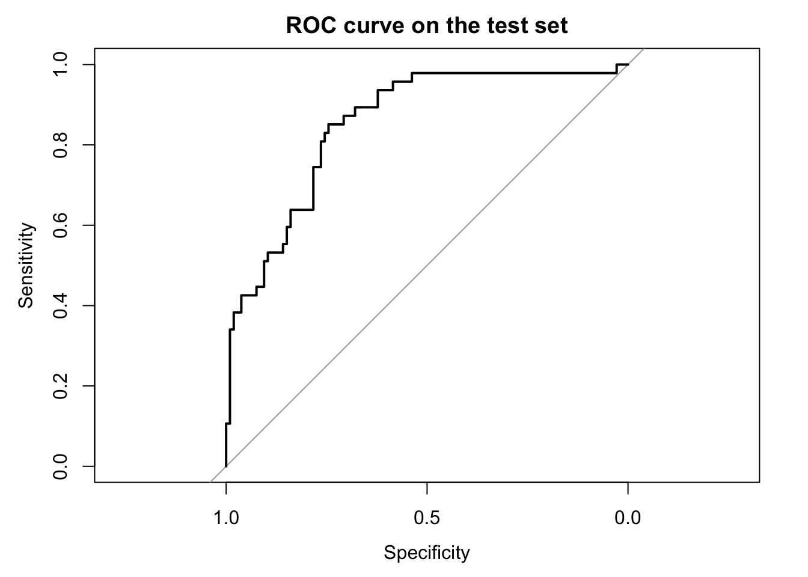
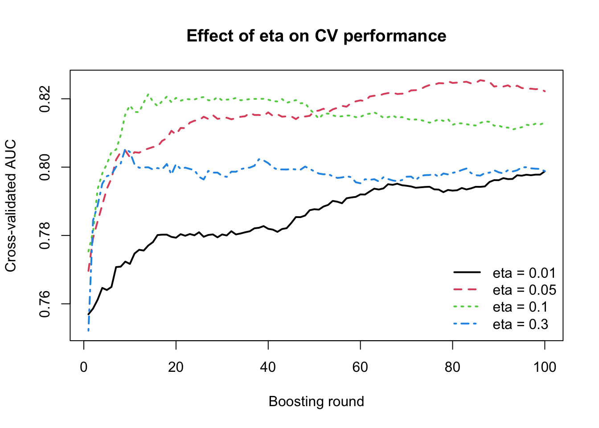

In this chapter, we are going to see the practical application and show how XGBoost is actually used for a real prediction task. We will move from the general ideas behind boosting to the full modeling workflow. In particular, we are going to cover data loading and inspection, preparing the predictors and outcome in a format suitable for XGBoost, splitting the data into training, validation, and test sets, fitting the model, monitoring performance during training, generating predictions, evaluating classification performance, studying variable importance, and improving the model through tuning.
4 Before fitting anything
Before fitting an XGBoost model, it is useful to keep a few practical points in mind. XGBoost is a supervised learning method and is especially well suited for tabular data, where rows represent samples and columns represent predictor variables. It can be used for many different tasks, including regression, binary classification, multiclass classification, survival analysis, and ranking.
In practice, XGBoost often performs very well when the relationship between predictors and outcome is not purely linear and when there may be interactions between variables. Unlike linear models, we do not need to specify these interactions explicitly, because the trees can discover them automatically during training. This makes XGBoost particularly useful for structured biomedical and clinical datasets, where the signal may be complex and nonlinear.
Another important practical point is that scaling the predictors is usually not necessary. Since XGBoost is tree-based, it does not rely on distances in the same way as methods such as k-nearest neighbors or support vector machines. Missing values in the predictors can also often be handled internally.
Categorical variables, however, require a bit more care. In many workflows, especially older ones, XGBoost expects the input features to be numerical, which means that categorical predictors must first be converted into dummy variables or another numerical representation. Newer implementations of XGBoost can handle categorical variables more directly in some settings, but this depends on the version and the interface being used. For this reason, it is always a good idea to check how the chosen workflow expects categorical predictors to be represented before fitting the model.
5 Data
In this chapter, we will use the PimaIndiansDiabetes2 dataset, which is available in the mlbench package in R. This is a well-known clinical dataset commonly used for binary classification problems, where the goal is to predict whether a patient shows signs of diabetes based on a set of clinical measurements. The dataset is very suitable for learning XGBoost because it is simple enough to work with step by step, while still containing realistic challenges such as missing values and multiple predictors.
To use this dataset, we first need to install the package if it is not already available, then load the package and import the data into R.
#install.packages("mlbench") # only needed oncelibrary(mlbench)
Warning: package 'mlbench' was built under R version 4.3.3
pregnant glucose pressure triceps insulin mass pedigree age diabetes
1 6 148 72 35 NA 33.6 0.627 50 pos
2 1 85 66 29 NA 26.6 0.351 31 neg
3 8 183 64 NA NA 23.3 0.672 32 pos
4 1 89 66 23 94 28.1 0.167 21 neg
5 0 137 40 35 168 43.1 2.288 33 pos
6 5 116 74 NA NA 25.6 0.201 30 neg
After running this code, the dataset will be available as a regular R data frame called PimaIndiansDiabetes2, and we can begin exploring its variables and structure before preparing it for XGBoost.
6 Data preparation
Before fitting an XGBoost model, we need to prepare the dataset carefully. This step is very important because XGBoost expects the input data to be in a specific form, and even though it is flexible and powerful, it does not remove the need for good data preparation. In practice, this means we need to understand the variables in the dataset, check the data types, inspect missing values, make sure the outcome is encoded correctly, and separate the predictors from the response.
The PimaIndiansDiabetes2 dataset contains clinical measurements collected from female patients of Pima Indian heritage. The outcome variable is diabetes, which tells us whether the patient showed signs of diabetes or not. All the other columns are predictor variables that will be used to predict this outcome.
The variables in the dataset are:
pregnant: number of times the patient was pregnant
glucose: plasma glucose concentration
pressure: diastolic blood pressure
triceps: triceps skin fold thickness
insulin: 2-hour serum insulin
mass: body mass index
pedigree: diabetes pedigree function
age: age in years
diabetes: outcome variable, with levels such as neg and pos
The first thing we should always do is inspect the structure of the dataset. This helps us verify how R has stored each variable and whether the outcome is a factor, numeric variable, or something else.
str(PimaIndiansDiabetes2)
'data.frame': 768 obs. of 9 variables:
$ pregnant: num 6 1 8 1 0 5 3 10 2 8 ...
$ glucose : num 148 85 183 89 137 116 78 115 197 125 ...
$ pressure: num 72 66 64 66 40 74 50 NA 70 96 ...
$ triceps : num 35 29 NA 23 35 NA 32 NA 45 NA ...
$ insulin : num NA NA NA 94 168 NA 88 NA 543 NA ...
$ mass : num 33.6 26.6 23.3 28.1 43.1 25.6 31 35.3 30.5 NA ...
$ pedigree: num 0.627 0.351 0.672 0.167 2.288 ...
$ age : num 50 31 32 21 33 30 26 29 53 54 ...
$ diabetes: Factor w/ 2 levels "neg","pos": 2 1 2 1 2 1 2 1 2 2 ...
summary(PimaIndiansDiabetes2)
pregnant glucose pressure triceps
Min. : 0.000 Min. : 44.0 Min. : 24.00 Min. : 7.00
1st Qu.: 1.000 1st Qu.: 99.0 1st Qu.: 64.00 1st Qu.:22.00
Median : 3.000 Median :117.0 Median : 72.00 Median :29.00
Mean : 3.845 Mean :121.7 Mean : 72.41 Mean :29.15
3rd Qu.: 6.000 3rd Qu.:141.0 3rd Qu.: 80.00 3rd Qu.:36.00
Max. :17.000 Max. :199.0 Max. :122.00 Max. :99.00
NA's :5 NA's :35 NA's :227
insulin mass pedigree age diabetes
Min. : 14.00 Min. :18.20 Min. :0.0780 Min. :21.00 neg:500
1st Qu.: 76.25 1st Qu.:27.50 1st Qu.:0.2437 1st Qu.:24.00 pos:268
Median :125.00 Median :32.30 Median :0.3725 Median :29.00
Mean :155.55 Mean :32.46 Mean :0.4719 Mean :33.24
3rd Qu.:190.00 3rd Qu.:36.60 3rd Qu.:0.6262 3rd Qu.:41.00
Max. :846.00 Max. :67.10 Max. :2.4200 Max. :81.00
NA's :374 NA's :11
We can see that we have numerical variables for predictors and diabeteshas been stored as factor which is nice for xgboost.
XGBoost expects the data to be stored as an xgb.DMatrix, which is a special data structure designed specifically for efficient XGBoost training. Conceptually, it still represents the same predictor matrix, with rows corresponding to samples and columns corresponding to features, but it is stored in a form that is more memory-efficient and better suited for the internal computations used by XGBoost. In addition to the predictors, an xgb.DMatrix can also store the outcome variable, observation weights, missing-value information, and other metadata. For this reason, although we often begin by preparing the data as a regular numeric matrix, the final step before training is usually to convert it into an xgb.DMatrix object.
For this tutorial, we can use the most basic form of xgb.DMatrix which is basically setting the predictors and the label.
After that, we are now more or less ready to start fitting our first XGBoost model. Before doing that, however, it is usually a good idea to split the data into training, validation, and test sets so that we can evaluate how well the model performs on unseen samples and also monitor performance during training.
library(xgboost)# -----------------------------# 1. Basic cleaning# -----------------------------dat <- PimaIndiansDiabetes2# Create numeric 0/1 outcome for XGBoostdat$diabetes_num <-ifelse(dat$diabetes =="pos", 1, 0)# -----------------------------# 2. Predictor matrix and label# -----------------------------x <- dat[, c("pregnant", "glucose", "pressure", "triceps","insulin", "mass", "pedigree", "age")]x <-as.matrix(x)y <- dat$diabetes_num# -----------------------------# 3. Train / validation / test split# -----------------------------set.seed(123)n <-nrow(x)# First choose training indices (60%)train_id <-sample(seq_len(n), size =round(0.60* n))# Remaining samplesremaining_id <-setdiff(seq_len(n), train_id)# From the remaining 40%, split equally into validation and test (20% + 20%)valid_id <-sample(remaining_id, size =round(0.20* n))test_id <-setdiff(remaining_id, valid_id)# Check sizeslength(train_id)
xgb.DMatrix dim: 461 x 8 info: label colnames: yes
dvalid
xgb.DMatrix dim: 154 x 8 info: label colnames: yes
dtest
xgb.DMatrix dim: 153 x 8 info: label colnames: yes
We are now ready to move to our first prediction model.
7 How to use XGBoost
In R, XGBoost can be used mainly through two functions: xgboost() and xgb.train(). The xgboost() function is a more high-level interface that allows us to fit a model quickly with relatively little code, which can be convenient for simple analyses or for getting started. In contrast, xgb.train() is a lower-level and more flexible interface that gives us much greater control over the training process. For example, it works naturally with xgb.DMatrix objects, allows us to define watchlists for monitoring performance during training, supports early stopping in a clearer way, and is generally better suited when we want to understand the modeling process in more detail.
For this chapter, we are going to use xgb.train().
Before we start modeling, we need to decide on the training parameters. XGBoost is a very flexible framework, and it contains many parameters that control not only how the model is trained, but also what kind of problem it is solving, for example binary classification, regression, survival analysis, ranking, or multiclass prediction. This large set of options is one of the main reasons XGBoost is so widely used: the same framework can be adapted to many different data types, prediction tasks, and levels of model complexity. You can read about the parameters here.
Let us first decide what we want to achieve with the model, and then choose the parameters that match that goal. In this chapter, we are working on a binary classification problem, where the aim is to predict whether a patient belongs to the negative or positive diabetes group. This immediately tells us that we need a classification objective, and because we want predicted probabilities, a natural choice is binary:logistic. We also need to decide how the trees should be grown and how conservative the training process should be, which is controlled by parameters such as eta, max_depth, min_child_weight, subsample, and colsample_bytree.
But for now, we go for simplest cae and basically just set binary:logistic and set eval_metric to au.
This means that XGBoost will treat the problem as a binary classification task and return predicted probabilities for the positive class. At the same time, model performance during training will be monitored using the area under the ROC curve, usually abbreviated as AUC. In other words, the model will learn to separate the two classes, while we follow how well that separation improves across boosting rounds.
It is often useful to monitor the training process while the model is being built, so that we can see how performance changes from one boosting round to the next. In XGBoost, this is done using a watchlist, which is simply a named list of datasets that we want the algorithm to evaluate during training, for example the training set and the validation set. By following the evaluation metric on these datasets across rounds, we can see whether the model is improving, whether it starts to level off, or whether it begins to overfit.
We decided to use nrounds = 10, which means that XGBoost will add 10 boosting steps, or in other words 10 trees, one after another. After each round, the model is evaluated on both the training set and the validation set using AUC. From the output, we can see that the training AUC increases almost continuously, from about 0.91 in the first round to about 0.99 by round 10. This shows that the model is becoming increasingly able to separate the two classes in the training data.
At the same time, the validation AUC improves only modestly and fluctuates around roughly 0.77 to 0.78, with its best value appearing around round 8. This is an important pattern. It tells us that while the model keeps fitting the training data better and better, the improvement on unseen validation data is much smaller. In other words, the model is learning useful signal, but it may also be starting to fit noise in the training set. This is the beginning of overfitting. So from this first run, the main message is that XGBoost can learn the classification task quickly, but we should not simply trust the training performance. Instead, we should pay close attention to the validation metric and ideally choose the number of rounds based on where the validation performance is best, rather than where the training performance is highest.
Let’s increase the boosting rounds to 1000 and see what happens:
model_xgboost <-xgb.train(params = param, data = dtrain, nrounds =1000, watchlist = watchlist,verbose =FALSE)# train/validation errors over boosting roundslog <- model_xgboost$evaluation_logprint(log)
Similar story here, after a few first rounds of boosting, the model starts fitting the training data perfectly but there is no improvment in the validation, a big sign of overfitting. So we should basically stop around after 8 or 9 rounds of boosting.
So far we saw that when the number of boosting rounds becomes too large, the training performance may continue to improve while the validation performance stops improving. This is a classical sign of overfitting. One possible solution is to inspect the validation curve manually and choose a suitable number of rounds by eye. However, in practice, XGBoost provides a much more convenient tool for this problem and is called early stopping.
The idea of early stopping is simple. We allow the model to train for a fairly large number of boosting rounds, but we tell XGBoost to stop automatically once the validation performance has not improved for a certain number of rounds. In this way, the algorithm itself can decide when further boosting is no longer helpful. This is often much more practical than choosing nrounds manually, and it is one of the most useful features in real-world XGBoost workflows.
To use early stopping, we keep the validation set in the watchlist, set a large upper bound for nrounds, and add the argument early_stopping_rounds.
Here, early_stopping_rounds = 20 means that training will stop if the validation AUC does not improve for 20 consecutive boosting rounds. So the model is allowed to continue as long as the validation performance keeps improving, but once improvement has stalled for long enough, training is terminated automatically.
After fitting, we can inspect the best iteration and the best validation score found during training:
model_xgboost_es$best_iteration
[1] 22
model_xgboost_es$best_score
[1] 0.7900826
The value stored in best_iteration tells us at which boosting round the best validation performance was achieved. This is usually a much better and more objective choice than simply picking a round by visual inspection. The best_score gives the corresponding validation metric value.
What we usually expect to see is that the training AUC continues to increase or stays high, while the validation AUC improves only up to a certain point. Early stopping then prevents the model from continuing far beyond that useful region. In this way, it provides an automatic balance between learning enough from the data and stopping before overfitting becomes too severe.
For practical use, early stopping is often one of the best ways to choose the effective number of boosting rounds. Instead of guessing nrounds in advance, we can set a large upper bound and let the validation performance decide how far the model should actually go.
8 Predict on test set
Now let’s see how the model performs on the test data:
# Predict probabilities on the test setpred_test <-predict(model_xgboost_es, newdata = dtest)# Compute AUC on the test setlibrary(pROC)auc_test <-auc(response = y_test, predictor = pred_test)auc_test
Area under the curve: 0.8521
This is a good prediction performance and gives us a natural point to move on. So far, we have mainly evaluated the model using AUC. This is very useful because it tells us how well the model separates the two classes overall across all possible thresholds. However, in practice, a binary classification model usually returns predicted probabilities, and at some point we must decide how those probabilities should be converted into class labels. In other words, we need to choose a classification threshold.
8.1 Prediction and classification threshold
If the model predicts a probability of 0.80 for diabetes, we would usually classify that patient as positive. But what about a probability of 0.55, or 0.40? The answer depends on the threshold we choose. A common default is 0.5, meaning that observations with predicted probability above 0.5 are classified as positive, while those below 0.5 are classified as negative. But this is not always the best choice. In clinical settings, for example, we may prefer a lower threshold if missing a true positive is especially costly.
This means that there are really two related but different questions:
How well does the model rank positive cases above negative cases overall?
This is what AUC measures.
How well does the model perform once we choose a specific threshold and turn probabilities into class labels?
This is where measures such as sensitivity, specificity, precision, recall, and the confusion matrix become useful.
8.1.1 Predicted probabilities on the test set
Since we used objective = "binary:logistic", the predict() function returns predicted probabilities for the positive class.
These values lie between 0 and 1. A value close to 1 means that the model considers the patient likely to belong to the positive diabetes class, while a value close to 0 means the opposite.
8.1.2 Converting probabilities to class labels
Let us start with the most common threshold, 0.5. If the predicted probability is at least 0.5, we classify the patient as positive. Otherwise, we classify the patient as negative.
Here, pred_class contains the predicted class labels, while pred_test contains the underlying predicted probabilities.
8.1.3 Confusion matrix
A confusion matrix compares the predicted classes with the true classes. It is one of the most basic tools for evaluating a classifier at a fixed threshold.
cm <-table(Predicted = pred_class,Observed = y_test)cm
Observed
Predicted 0 1
0 89 17
1 17 30
This table shows how many observations were:
true negatives: predicted negative and actually negative
false positives: predicted positive but actually negative
false negatives: predicted negative but actually positive
true positives: predicted positive and actually positive
To make this easier to work with, we can extract the four numbers explicitly.
Accuracy: the overall fraction of correctly classified observations
Sensitivity: among the truly positive patients, how many were correctly detected?
Specificity: among the truly negative patients, how many were correctly classified as negative?
Precision: among the patients predicted as positive, how many were actually positive?
Recall: same as sensitivity
F1 score: a balance between precision and recall
In a clinical setting, sensitivity and specificity are often especially important. A model with high sensitivity misses fewer true cases, while a model with high specificity produces fewer false alarms.
8.1.5 Trying different thresholds
The threshold does not have to be 0.5. To see how the classification changes, let us compare a few thresholds.
Lower threshold: more patients are classified as positive, which often increases sensitivity but decreases specificity
Higher threshold: fewer patients are classified as positive, which often increases specificity but decreases sensitivity
So the “best” threshold depends on the goal of the analysis. If it is very important not to miss positive cases, a lower threshold may be better. If false positives are more costly, a higher threshold may be preferred.
8.1.6 ROC curve
The ROC curve summarizes this threshold tradeoff across all possible thresholds. That is one reason it is so widely used.
library(pROC)roc_obj <-roc(response = y_test, predictor = pred_test)plot(roc_obj,main ="ROC curve on the test set")

auc(roc_obj)
Area under the curve: 0.8521
The ROC curve shows the tradeoff between sensitivity and 1 - specificity across all thresholds. The AUC is simply the area under this curve. A larger AUC means that the model is better at ranking positive cases above negative cases overall.
8.1.7 A small visual comparison of thresholds
We can also visualize how some of the threshold-based metrics change.
This figure makes it easier to see that changing the threshold changes the practical behavior of the classifier, even though the underlying predicted probabilities stay exactly the same.
8.1.8 Summary
Predicted probabilities and predicted classes are not the same thing. XGBoost gives us probabilities, but the final class labels depend on the threshold we choose. AUC evaluates how well the model separates the classes overall, while confusion matrices and related measures evaluate how the model behaves at one specific threshold.
So in practice, both views are useful. AUC gives a threshold-independent summary of discrimination, while threshold-based measures such as sensitivity, specificity, and precision help us understand the real classification consequences of the model in a practical setting.
9 Cross-validation
So far, we have evaluated the model using one particular split of the data into training, validation, and test sets. This is a very useful starting point, but it also has an important limitation that is the result may depend on the exact split we happened to choose. If the validation set is unusually easy or unusually difficult, the estimated performance may be too optimistic or too pessimistic. Cross-validation helps reduce this dependence on a single split by repeatedly dividing the available training data into different parts and evaluating the model across these repeated splits.
The basic idea is the following. First, we set aside a final test set and do not touch it during model development. Then, on the remaining data, we perform cross-validation. In each fold, part of the remaining data is used for fitting and another part is used for validation. This gives us a more stable picture of how well the model is expected to generalize, and it is especially helpful when choosing the number of boosting rounds or comparing different parameter settings.
In XGBoost, cross-validation can be performed with the xgb.cv() function. This function repeatedly splits the supplied data into folds, trains the model, evaluates it on the held-out fold, and then summarizes the performance across folds for each boosting round.
9.1 Setting aside the final test set
Before doing cross-validation, we first reserve a final test set. This test set will remain untouched until the end, and all model selection steps will be done only on the remaining data.
This means that the test set is removed first, and only the remaining data will be used inside cross-validation.
9.2 Running cross-validation with xgb.cv()
We now define a simple parameter set and run cross-validation on the remaining data. Since this is still our first practical example, we keep the setup simple and use only the objective and evaluation metric.
train_auc_std: standard deviation of training AUC across folds
test_auc_mean: average validation AUC across folds
test_auc_std: standard deviation of validation AUC across folds
The most important column for model selection is usually test_auc_mean, because this gives the average validation performance across folds.
9.4 Best number of rounds from cross-validation
A very common use of cross-validation in XGBoost is to decide how many boosting rounds we should keep. We can find the round with the highest average validation AUC like this:
This gives us the boosting round that performed best on average across the validation folds.
9.5 Refit the model on all non-test data
Once cross-validation has told us a reasonable number of boosting rounds, we can fit a final model on all the non-test data using that number of rounds.
This test AUC is our final external estimate within this chapter, because the test set was not used during cross-validation or training of the folds.
9.7 Early stopping inside cross-validation
In practice, we often combine cross-validation with early stopping so that XGBoost stops automatically when the validation performance is no longer improving.
This is often more convenient than manually scanning through all rounds, because XGBoost will stop once performance has stopped improving for a specified number of rounds.
10 Tuning
In order to build a good predictive model, we need three things. First, we want the model to learn meaningful patterns from the training data. If it cannot even fit the training data reasonably well, then it is too simple and will fail to capture the structure in the problem. This is usually referred to as high bias, or underfitting.
Second, we do not want the model to become too closely attached to the training data. A model that keeps chasing small details, random fluctuations, or noise in the training set may appear to perform extremely well there, but this often comes at the cost of poor generalization. This problem is called high variance, or overfitting.
Third, and most importantly, we want the model to perform well on unseen data. After all, the real purpose of a predictive model is not to memorize the samples it has already seen, but to make accurate predictions for new observations. Good tuning is therefore always a balance between bias and variance: the model should be flexible enough to learn the important signal, but not so flexible that it starts fitting noise.
Luckily XGBoost gives a number of parameters which we can use to tune the model and find a good balance between bias and variance. This process is called hyperparameter tuning. Here we try to understand and tune a few of the most important parameter of XGBoost.
10.1nrounds
We have already seen nrounds in earlier examples. This parameter controls how many boosting rounds are performed, or in other words, how many trees are added to the model. Since XGBoost builds the model step by step, with each new tree adding a correction to the current predictions, nrounds determines how many such corrections we allow the model to make.
If nrounds is too small, the model may stop before it has learned enough from the training data. In that case, the model may be too simple and underfit. If nrounds is too large, the model may continue adding corrections even after the main signal has already been learned, and it may start fitting noise in the training data instead. In that case, the model may overfit.
This means that nrounds is one of the most direct parameters controlling model complexity. Too few rounds can give high bias, while too many rounds can give high variance. For this reason, the choice of nrounds is usually not made in isolation, but together with validation monitoring, cross-validation, or early stopping.
In the cross-validation part we have seen how to tune this parameter.
10.2eta
Another very important parameter is eta, also known as the learning rate. While nrounds tells us how many trees we add, eta controls how much each new tree is allowed to contribute when it is added to the model. In other words, it scales the correction made by each boosting step.
If eta is large, each tree is allowed to make a stronger correction to the current predictions. This can make learning faster, because the model can improve quickly in a small number of rounds. However, it also makes the fitting process more aggressive, which can increase the risk of overfitting. If eta is small, each tree contributes only a small correction. This makes the learning process slower and more conservative, but it often leads to a more stable model that generalizes better.
This means that eta and nrounds are closely connected. A small value of eta usually requires a larger value of nrounds, because the model is learning in smaller steps and therefore needs more rounds to reach a good solution. A larger value of eta usually requires fewer rounds, because each tree is making a stronger update. For this reason, these two parameters are often considered together rather than separately.
From the perspective of bias and variance, a very large eta can make the model too aggressive and unstable, while a very small eta can make the model unnecessarily slow and may require many more boosting rounds. In practice, smaller values such as 0.1, 0.05, or even lower are often used together with cross-validation and early stopping to find a good balance between learning speed and generalization.
# --------------------------------------------------# Define a few eta values to compare# --------------------------------------------------eta_values <-c(0.01, 0.05, 0.10, 0.30)# We keep the same maximum number of rounds for all modelsnrounds_fixed <-100# Store results herecv_results <-vector("list", length(eta_values))names(cv_results) <-paste0("eta_", eta_values)# --------------------------------------------------# Run CV for each eta# --------------------------------------------------set.seed(123)for (i inseq_along(eta_values)) { eta_i <- eta_values[i] param_i <-list(objective ="binary:logistic",eval_metric ="auc",eta = eta_i ) cv_fit <-xgb.cv(params = param_i,data = dcv,nrounds = nrounds_fixed,nfold =5,verbose =0 ) tmp <- cv_fit$evaluation_log tmp$eta <- eta_i cv_results[[i]] <- tmp}cv_results_df <-do.call(rbind, cv_results)# --------------------------------------------------# Plot validation AUC across rounds for each eta# --------------------------------------------------plot(NULL,xlim =c(1, nrounds_fixed),ylim =range(cv_results_df$test_auc_mean),xlab ="Boosting round",ylab ="Cross-validated AUC",main ="Effect of eta on CV performance")eta_unique <-sort(unique(cv_results_df$eta))line_types <-1:length(eta_unique)for (j inseq_along(eta_unique)) { eta_j <- eta_unique[j] dat_j <- cv_results_df[cv_results_df$eta == eta_j, ]lines(dat_j$iter, dat_j$test_auc_mean,lwd =2, lty = line_types[j],col=line_types[j])}legend("bottomright",legend =paste("eta =", eta_unique),lty = line_types,col=line_types,lwd =2,bty ="n")

This plot shows clearly that the learning rate eta affects not only the final performance, but also the speed and stability of learning across boosting rounds. When eta = 0.3, the model improves very quickly in the first few rounds, but then reaches a plateau early and does not continue to improve much afterward. In facts it starts doing mistakes. This suggests that the model is learning aggressively, making large corrections at each step, but may also be exhausting its useful learning capacity too quickly. A similar pattern is seen for eta = 0.1, which also improves rapidly and reaches a relatively high AUC early, although it remains somewhat more stable than eta = 0.3.
For eta = 0.05, the improvement is slightly slower at the beginning, but it continues to rise for a longer period and eventually reaches the best overall validation performance among the values tested here. This suggests a better balance between learning speed and stability. In contrast, eta = 0.01 learns much more slowly. Even after 100 rounds, the AUC is still improving gradually, which indicates that the model is taking very small steps and would likely need many more boosting rounds to reach its full potential.
So eta = 0.05 appears to give the best balance, whereas eta = 0.01 is likely too small for only 100 rounds, and eta = 0.3 appears somewhat too aggressive. Please remember that eta should not be tuned in isolation, but together with the number of boosting rounds.
Often a very common practical choice is to begin with a smaller learning rate such as eta = 0.05 or 0.1, set nrounds fairly large, and use early stopping to find how many rounds are actually useful.
10.3max_depth
We have not seen max_depth in any of the examples yet. This parameter controls the maximum depth of each individual tree, that is, how many levels of splits a tree is allowed to grow before it must stop. Since deeper trees can create more detailed decision rules and more local regions in the predictor space, max_depth is one of the most important parameters controlling the complexity of each boosting step.
If max_depth is small, each tree remains simple and can only make broad and relatively coarse corrections to the current predictions. This often makes the model more stable and less likely to overfit, but it may also make it too rigid to capture more complicated patterns in the data. If max_depth is large, each tree can make much more detailed and localized corrections. This increases flexibility, but it also increases the risk that the model starts fitting noise or accidental patterns in the training data.
So while nrounds controls how many correction steps we allow, max_depth controls how complex each correction step is allowed to be. From the perspective of bias and variance, shallow trees tend to increase bias but reduce variance, while deeper trees reduce bias but can increase variance. For this reason, max_depth is often one of the first parameters to tune when building an XGBoost model.
This shows a very clear bias-variance pattern. As max_depth increases, the training AUC rises steadily and very quickly, eventually becoming almost perfect. This means that deeper trees are increasingly able to fit the training data and make very detailed corrections. In other words, increasing max_depth reduces bias.
However, the validation AUC behaves quite differently. It improves at first, reaches its highest value around max_depth = 2 to 3, and then starts to decline as depth increases further. This means that although deeper trees continue to fit the training data better, that extra flexibility is no longer helping on unseen data. Instead, the model is starting to overfit, so variance is increasing.
So the main message here is that deeper trees are not always better. Very large values of max_depth allow the model to become too complex, which gives excellent training performance but worse generalization. In our case the best validation performance is at about max_depth = 2 or max_depth = 3.
10.4Gamma and min_child_weight
Gamma and min_child_weight are two other parameters that control tree growth, but in a more data-driven way than max_depth. While max_depth gives a hard upper limit on how deep a tree is allowed to become, gamma and min_child_weight decide whether a split is worth making based on the improvement it gives and the amount of information available in the resulting nodes.
The parameter gamma controls how much improvement in the objective function is required before XGBoost is allowed to make a new split. If a proposed split does not improve the fit enough, the split is rejected. This means that larger values of gamma make the tree-growing process more conservative. In practice, increasing gamma can prevent the model from making small, weak, or unnecessary splits that only explain minor fluctuations in the training data.
The parameter min_child_weight controls how much total information, measured through the summed Hessian, must be present in a child node for the split to be accepted. In simpler terms, it prevents XGBoost from creating nodes that are supported by too little data. If a split would produce a child node with too little information, the split is not allowed. Larger values of min_child_weight therefore make the model more conservative and reduce the chance of creating very specific local rules.
So although both parameters restrict tree growth, they do so in different ways. Gamma asks whether a split improves the model enough to be worth making, while min_child_weight asks whether the resulting child nodes contain enough information to justify the split. In that sense, gamma focuses more on improvement in fit, whereas min_child_weight focuses more on the strength or support of the data behind the split.
From the perspective of bias and variance, increasing either of these parameters usually makes the model simpler and more stable. This can reduce overfitting, but if the values become too large, the model may become too conservative and underfit. For this reason, both gamma and min_child_weight are important tuning parameters when we want to control tree complexity without relying only on a hard depth limit.
Let’s see the effect on a simple model. We are going to build a model using only a single tree and with a depth of 2 and visulize the tree.
As youy see we have two parent nodes age and mass. Gain (the loss improvments) of age is relatively large compare to mass so let’s use gamma that is a little bit larger that the mass gain.
The result is that we have now replaced mass with pedigree, which provides better information support at its leaves. Similar to before, these parameters can be optimized using cross validation or similar.
Note
In simple regression min_child_weight ≈ minimum number of samples in a leaf
10.5 L1 and L2 penalties
In addition to controlling how trees grow, XGBoost also allows us to regularize the size of the corrections that the trees add. This is done through the L1 and L2 penalties, controlled by the parameters alpha and lambda, respectively.
The parameter lambda corresponds to an L2 penalty. It shrinks leaf values smoothly toward zero, which makes the corrections added by each tree smaller and less aggressive. flexible.
The parameter alpha corresponds to an L1 penalty. Like lambda, it also discourages large leaf values, but it does so in a way that can shrink weak corrections much more strongly, sometimes effectively pushing them to zero.
So, in simple terms, lambda makes the correction factors smaller, while alpha can make some of the weaker correction factors disappear altogether. Increasing either of these penalties usually makes the model more conservative.
From the perspective of bias and variance, larger L1 and L2 penalties usually increase bias and reduce variance. They are therefore useful when the model is showing signs of overfitting, and they provide another way to control complexity beyond just limiting the tree structure itself.
For example you can see the effect of using a large alpha:
You can some of the correction factors (value) has been set to zero so basically there no correction at all for those portion of the data!
10.6subsample and colsample_bytree
Another important way to control model complexity is to add some randomness during training. In XGBoost, this is done through the parameters subsample and colsample_bytree. The purpose of these parameters is to make the model less sensitive to noise and less likely to rely too heavily on particular observations or particular variables.
The parameter subsample controls the fraction of training samples that are randomly used when growing each tree. For example, if subsample = 0.8, then each new tree is trained using only 80% of the training observations. This introduces randomness from one boosting round to the next and can help reduce overfitting, because the model is no longer allowed to look at the full dataset every time it makes a new correction.
The parameter colsample_bytree controls the fraction of predictor variables that are randomly available when each tree is constructed. For example, if colsample_bytree = 0.8, then each tree only sees 80% of the features. This reduces the chance that the model always relies on the same dominant predictors and can make the training process more robust, especially when predictors are correlated or when some variables contain noisy signal.
So basically, subsample adds randomness across rows, while colsample_bytree adds randomness across columns. Both parameters make the model less deterministic and often more robust. From the perspective of bias and variance, lowering these values usually increases bias slightly, because each tree has access to less information, but it can reduce variance and improve generalization by preventing the model from fitting noise too closely.
10.7num_parallel_tree
The parameter num_parallel_tree controls how many trees are grown in parallel during each boosting round. In standard XGBoost, each round usually adds one new tree, which means that the model is updated step by step with a single correction at a time. When num_parallel_tree is larger than 1, XGBoost grows several trees in the same round and combines their contributions before moving to the next boosting step.
This changes the behavior of the model slightly. Instead of making one correction per round, the model makes a small collection of corrections per round. In that sense, num_parallel_tree introduces an element that is closer to random forest style learning, especially when it is combined with parameters such as subsample < 1 and colsample_bytree < 1. That is why this parameter is sometimes used to mimic or approximate boosted random forest behavior within the XGBoost framework.
In practice, num_parallel_tree is not one of the first parameters people usually tune in ordinary boosting applications. Most standard XGBoost models use the default value 1, meaning one tree per boosting round. But it is useful to know that the option exists, because it shows again how flexible XGBoost is: it can behave like a classical boosting method, but it can also move somewhat toward a random-forest-like ensemble by growing multiple trees in parallel at each step.
10.8 How to tune the parameters
A good way to tune XGBoost is to do it in stages, not all at once.
Despite that there are several ways of doing the parameter tuning i would prefer the following pipeline:
Decide the task settings first.
For our case: objective = "binary:logistic" and a metric like auc. These define what the model is trying to do before we start adjusting model complexity.
Tune the tree complexity first.
We start with max_depth and min_child_weight, and sometimes gamma. These are often the most important parameters because they decide how aggressive and local each tree can become.
Then tune the randomness parameters.
After that, we tune subsample and colsample_bytree. These add randomness across rows and columns and often help reduce overfitting.
Then tune explicit regularization if needed.
That means lambda and alpha. These shrink the leaf corrections and are useful when the model is still too flexible.
Finally, tune eta together with the number of boosting rounds.
This part is important: eta and nrounds as said before should be thought of together, not separately. Smaller eta usually needs more rounds, and the clean way to choose the useful number of rounds is early stopping.
11 Interpretation
A natural first step in interpretation is to ask which variables were most influential in the fitted model. In XGBoost, this is often summarized using variable importance. The idea is to quantify how much each feature contributed to the tree-building process across the ensemble.
Variable importance is a global measure. This means that it gives us an overall summary across the full model, rather than explaining one specific prediction. It can therefore help us answer questions such as: Which predictors did the model rely on most? Which variables were used often? Which ones contributed most to improving the fit?
In XGBoost, feature importance can be summarized in several ways, such as gain, cover, and frequency. Gain is often the most informative, because it reflects how much a variable improved the objective when it was used in splits. Cover relates more to how many observations were affected by those splits, and frequency counts how often the feature was used. So even though all of them are useful, they do not mean exactly the same thing.
At the same time, variable importance should be interpreted carefully. A high importance score tells us that a variable was useful for prediction, but it does not tell us the direction of effect, the shape of the relationship, or whether the variable is causally important. It is therefore a very useful starting point, but not the end of interpretation.
We can simply use xgb.importance function on the trained model to get the variable importance out.
Later implementations of XGBoost can handle categorical variables more directly. However, in many workflows, and especially in older versions, the input features need to be numerical. Therefore, to use categorical variables, we first need to convert them into a numeric representation. A common way to do this in R is to use model.matrix(), which creates dummy variables from factor columns. In this way, each category is translated into one or more numeric indicator columns, and the resulting matrix can then be used as input for XGBoost just like any other predictor matrix.
For example, suppose we have a dataset with both numeric and categorical predictors:
age bmi sex smoking
1 45 28.1 female never
2 50 31.4 male former
3 39 24.8 female current
4 61 29.9 male former
5 47 33.2 female never
If we try to use this data directly, the categorical variables sex and smoking are not yet in a purely numeric form. We can convert them with model.matrix() as follows:
So, in simple terms, when categorical predictors are present, one common solution is to transform them into dummy variables first. This gives us a purely numeric matrix and makes the data compatible with the usual XGBoost workflow in R.
13 Common objective functions and sensible evaluation metrics
When using XGBoost, the objective tells the model what kind of problem it is trying to solve, while eval_metric tells us how we want to monitor performance during training. XGBoost supports many objectives, but in practice a small set covers most common use cases. Also remember that if you provide multiple evaluation metrics, XGBoost uses the last one for early stopping.
13.1 1. Regression
Use these when the outcome is numerical.
objective = "reg:squarederror"
This is the standard choice for ordinary regression. A very natural metric is rmse, since it is on the same scale as the outcome and is easy to interpret. Another reasonable option is mae if you want a metric that is less sensitive to large errors.
objective = "reg:absoluteerror"
This is useful when you want training to focus on absolute errors rather than squared errors. A sensible metric here is mae. You can still monitor rmse too, but mae usually matches the training goal more directly.
objective = "reg:squaredlogerror"
This can be useful when large target values should not dominate the fit too much, or when relative errors matter more than absolute ones. The most natural metric is rmsle. This setup requires care because the log transformation imposes restrictions on the predictions.
objective = "count:poisson"
Use this for count outcomes, such as numbers of events. A sensible default metric is poisson-nloglik, since it matches the count-model likelihood.
objective = "survival:cox"
Use this for right-censored survival data when you want a Cox proportional hazards type model. A natural metric is cox-nloglik.
A practical starting point for most ordinary regression tasks is:
Use these when the outcome has two classes, such as yes/no, case/control, or disease/no disease.
objective = "binary:logistic" This is usually the best default for binary classification because it outputs probabilities. Very common metrics are logloss and auc. Use logloss when you care about well-calibrated probabilities, and auc when you mainly care about ranking positives above negatives. If you want an error rate at a fixed cutoff, you can also monitor error.
objective = "binary:hinge" This gives hard class labels directly instead of probabilities. In that case, error is the most natural metric.
objective = "multi:softprob" This is usually the most flexible choice because it returns class probabilities for all classes. The most sensible metrics are mlogloss and merror. mlogloss is usually better for training and early stopping because it uses the full probability information, while merror is easier to explain as plain misclassification rate. You must also specify num_class.
objective = "multi:softmax" This outputs only the predicted class label, not the full class probabilities. A natural metric here is merror. This is fine if you only care about the final class call, but multi:softprob is often more useful in practice because you can still convert probabilities to class labels later.
Use these when the goal is to rank items rather than predict a simple class or number, such as search results or recommendation lists.
objective = "rank:ndcg" A natural metric is ndcg.
objective = "rank:map" A natural metric is map.
objective = "rank:pairwise" This is another common ranking objective, often monitored with ndcg or map depending on the problem.
13.5 A simple rule of thumb
A good practical rule is: choose an eval_metric that matches the thing you truly care about on unseen data.
If you care about average prediction error in regression, use rmse or mae.
If you care about probability quality in classification, use logloss or mlogloss.
If you care about ranking positives above negatives, use auc.
If you care about plain classification accuracy, use error or merror, but be careful because these can hide important problems such as class imbalance.
14 Summary of the full workflow
In this chapter, we have gone through the main practical steps needed to use XGBoost for a real prediction problem.
A practical XGBoost analysis usually follows this general pipeline:
Inspect the data
Start by understanding the dataset, the variables, the outcome, the data types, and any missing values or categorical predictors that may need special handling.
Prepare predictors and outcome
Convert the response into the format needed for the chosen objective, and make sure the predictors are represented in a form suitable for XGBoost, usually as a numeric matrix or an appropriate data structure.
Split the data
Set aside a final test set that will remain untouched until the end. Use the remaining data for model development, validation, and cross-validation.
Create an xgb.DMatrix
Convert the predictors and labels into xgb.DMatrix objects, which are the data containers XGBoost uses for efficient training and prediction.
Fit an initial model
Start with a simple model using a small set of essential parameters, such as the objective and evaluation metric, to establish a baseline.
Monitor training
Use a watchlist to follow performance on the training and validation sets across boosting rounds. This helps reveal whether the model is learning useful structure or beginning to overfit.
Use cross-validation and early stopping
Rather than relying on one split alone, use cross-validation to obtain a more stable estimate of predictive performance. Early stopping can be used to choose the effective number of boosting rounds automatically.
Tune important parameters
Adjust the main complexity and regularization parameters, such as max_depth, min_child_weight, eta, subsample, and colsample_bytree, to find a better balance between bias and variance.
Refit on the full development data
Once a suitable parameter combination has been chosen, fit the final model on all non-test data so that it uses as much information as possible before final evaluation.
Evaluate on the untouched test set
Only at the end should the final model be assessed on the test data. This gives the most honest estimate of how well the model is likely to perform on unseen observations.
Interpret the fitted model
Finally, examine variable importance, partial dependence, SHAP values, or other interpretation tools to understand which variables matter and how they influence the predictions.
15 Practical warnings and common pitfalls
Although XGBoost is a powerful and flexible method, it is still easy to misuse if we are not careful. A few practical warnings are therefore worth keeping in mind.
First, the test set should not be used during tuning. The test set is meant to represent completely unseen data and should only be used once the model-building process is finished. If we repeatedly look at test-set performance while choosing parameters, then the test set is no longer acting as a true external check, and the final performance estimate may become too optimistic.
Second, very high training performance does not automatically mean that the model is good. In XGBoost, it is often easy to obtain a training AUC that is extremely high, even close to perfect, especially when the trees are deep or the number of rounds is large. But the real question is how well the model performs on unseen data. A large gap between training and validation performance is often a sign of overfitting.
Third, variable importance should not be confused with causality. A variable may be very useful for prediction without being causally responsible for the outcome. Importance scores simply tell us that the variable helped the model reduce prediction error. They do not prove that changing that variable would change the outcome.
Fourth, AUC alone is not enough. AUC is a very useful summary of class separation, but it does not tell us everything. In practical applications, we may also care about calibration, classification thresholds, sensitivity, specificity, precision, recall, or other measures depending on the goal of the analysis. A model can have a good AUC and still be unsatisfactory in other important ways.
Fifth, correlated predictors can complicate interpretation. When several variables carry similar information, XGBoost may split on one of them in one tree and another one in a different tree. As a result, variable importance may be spread across correlated predictors, and interpretation tools such as PDPs or SHAP summaries may be harder to interpret cleanly.
Finally, small datasets can make tuning unstable. In very small samples, the estimated performance may depend strongly on the exact split or fold assignment, and the selected tuning parameters may vary considerably from run to run. In such settings, cross-validation is still useful, but the results should be interpreted with extra caution.
So, while XGBoost is powerful, good practice still matters. The model should be trained, tuned, and interpreted with care, and the final conclusions should always be based on validation and test performance rather than training performance alone.